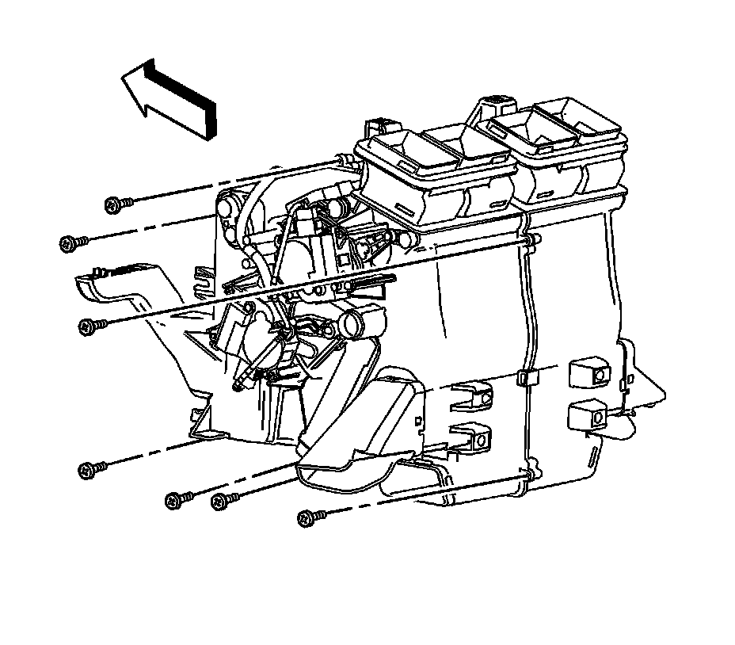
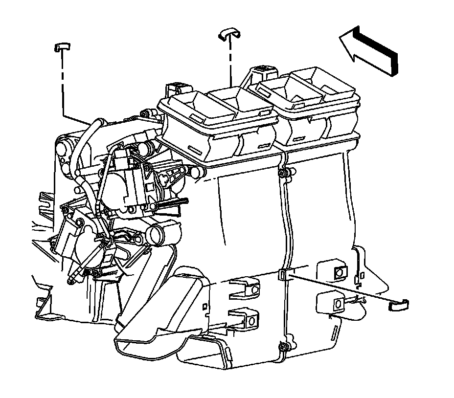
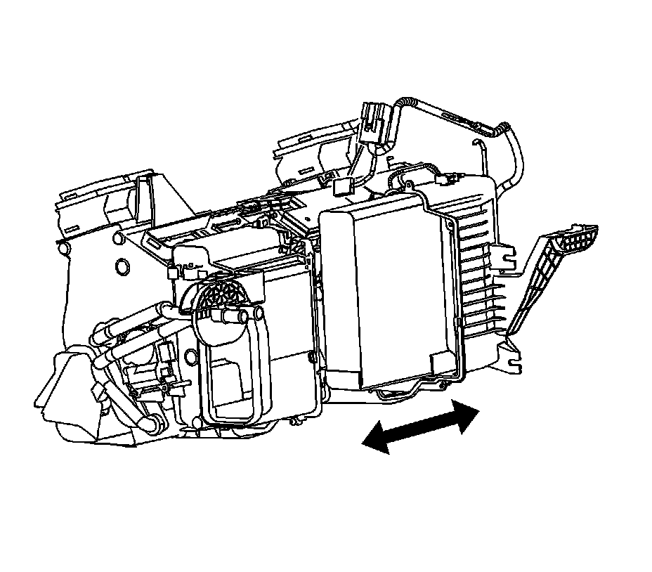
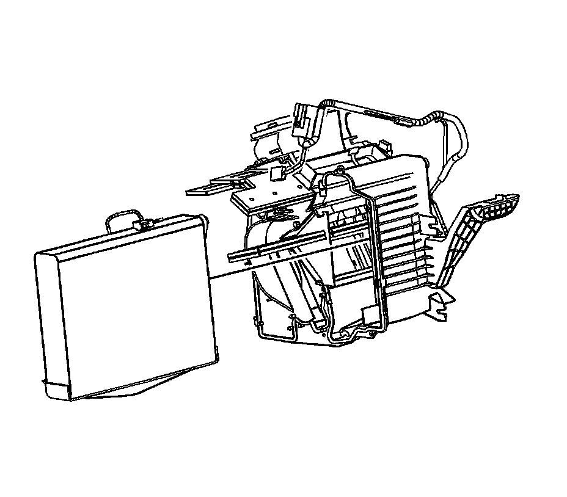
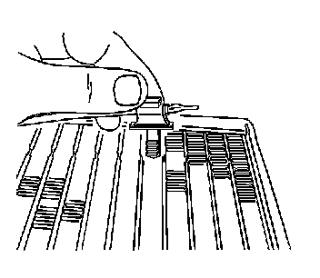
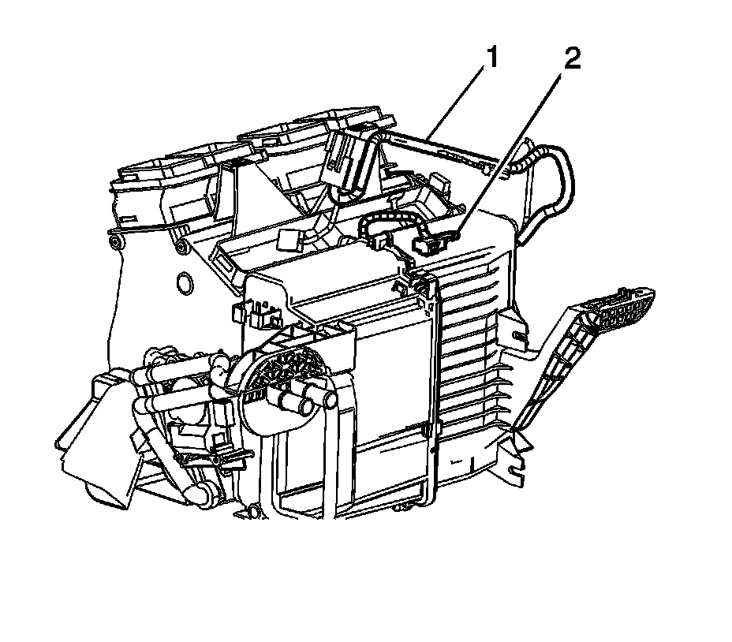

Evaporator Temperature Sensor / Switch: Service and Repair
Evaporator Temperature Sensor Replacement
Removal Procedure
1. Remove the HVAC module. Refer to HVAC Module Assembly Replacement (Left Hand Drive) (HVAC Module Assembly Replacement (Left Hand Drive))HVAC Module Assembly Replacement (Right Hand Drive) (HVAC Module Assembly Replacement (Right Hand Drive)) .
2. Disconnect all associated wiring connections attached to the HVAC module.
3. Remove heater core. Refer to Heater Core Replacement (Service and Repair) .
4. Remove the right side air temperature actuator and linkage. Refer to Air Temperature Actuator Replacement - Right Side (Air Temperature Actuator Replacement - Right Side) .

5. Remove the HVAC module case screws.

6. Remove the HVAC module retainer clips.

7. Separate the HVAC module case.

8. Reposition the evaporator core to access the evaporator sensor.

9. Remove the evaporator sensor and harness from the evaporator core.
Installation Procedure
1. Add refrigerant oil to the evaporator core. Refer to Refrigerant System Capacities ([1][2]Capacity Specifications) .
2. Install the new evaporator core seals to evaporator.
3. Install the evaporator sensor and harness to the evaporator.
4. Install the evaporator core.
5. Connect the HVAC module case halves together.

6. Reposition and connect the HVAC Module wiring harness (1).
7. Install the HVAC module retainer clips.
Notice: Refer to Fastener Notice .
8. Install the HVAC module case screws.
Tighten the screws to 1 N.m (9 lb in).
9. Install the right side air temperature actuator and linkage. Refer to Air Temperature Actuator Replacement - Right Side (Air Temperature Actuator Replacement - Right Side) .
10. Install the heater core. Refer to Heater Core Replacement (Service and Repair) .
11. Reconnect all associated wiring connections attached to the HVAC module.
12. Install the HVAC module. Refer to HVAC Module Assembly Replacement (Left Hand Drive) (HVAC Module Assembly Replacement (Left Hand Drive))HVAC Module Assembly Replacement (Right Hand Drive) (HVAC Module Assembly Replacement (Right Hand Drive)) .